Как на
практике применить групповые политики в Windows 10
В этой лекции мы рассмотрим что такое редактор локальной групповой политики, как установить эту функцию на Windows 10 Home и как администраторам сети управлять и вносить нужные изменения в параметры операционных систем других ПК всего с одного компьютера.
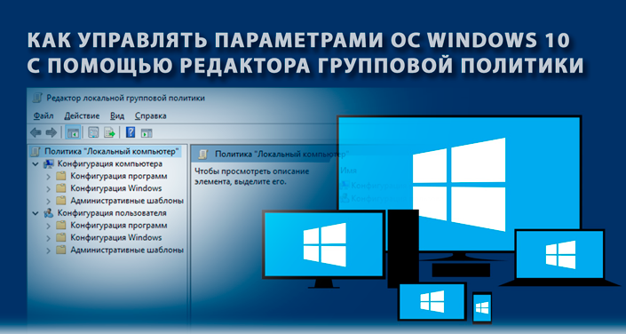
Windows 10 является последней версией операционной системы от Microsoft и стала ядром большинства существующих платформ: персональные компьютеры, ноутбуки, планшеты, смартфоны и даже игровые консоли. Тем не менее, компания разработчиков решила разделить единую операционную систему на подтипы. Практически наверняка ведущим мотиватором, как и для любой другой компании, стала прибыль. Гораздо выгоднее повышать ценник с добавлением дополнительных функций, нежели сделать all inclusive с одной ценой.
Несмотря на то, что версий операционной системы Windows 10 целых 4, далеко не каждый пользователь сможет найти между ними разницу. Именно поэтому была создана Windows 10 Home Edition. Она представляет собой базовую ОС со всеми необходимыми функции для начинающих юзеров. К сожалению, Windows 10 Home не осталась без недостатков — в ней полностью отсутствует возможность выбора способа обновления ядра операционной системы.
Базовые компоненты Pro и Home версий совершенно идентичны, разница заключается лишь в бизнес-компонентах. Они позволяют настроить связь между компьютерами внутри одной корпоративной сети и беспрепятственно работать целым офисом. В домашних же условиях эта особенность бесполезна и у нас нет нужды связывать два устройства.
Что отличает Windows 10 Pro от Windows 10 Home:
Большинство описанных выше функций не пригодятся обычному пользователю. Они предназначены для ведения бизнеса и работы с документами. Однако, особое внимание следует уделить такой особенности как управление групповыми политиками.
Данная функция открывает широкие возможности по настройке компьютера для каждого юзера и при этом не вынуждает идти на высокие риски.
Редактор групповой политики — это инструмент, позволяющий администраторам сети внести нужные изменения в параметры Windows всего с одного компьютера. Данное приложение включает в себе все доступные варианты настройки операционной системы: реестровые параметры, настройки безопасности, параметры установки программного обеспечения, сценарии запуска и отключения компьютера, пере-направление папок.
С помощью редактора групповой политики вы можете с легкостью ограничить сотрудникам доступ к тем или иным корпоративным документам, или же, наоборот, открыть его. Таким образом появляется возможность контроля информации внутри предприятия.
Редактор групповой политики позволяет работать с одиночным компьютером и проводить с ним аналогичные манипуляции. Прекрасно подходит для настройки Windows в домашних условиях.
Если вы обратите внимание на функционал обоих редакторов, то быстро убедитесь в превосходстве редактора локальной групповой политики. Это объясняется тем, что работая в режиме групповой политики, вы всегда видите и понимаете с чем имеете дело — нет сложных кодов, которые доступны только людям, работающим в данной сфере.
Внося какое-либо изменение внутри редактора групповой политики, они автоматически будут задействованы и в редакторе реестра. Так же и наоборот. Если вы внесете изменения в редакторе реестра, значения редактора групповой политики будут изменены до следующей корректировки.
Интересный факт. Групповая политика в Windows 10 с определенным интервалом времени автоматически совершает обновление реестра. Это делается для сохранения его рабочего состояния. Как правило, интервал времени находится в диапазоне от 30 до 90 минут. Однако, при желании, вы всегда можете его изменить.
Для пользователей операционных систем Windows 10 Pro и Windows 10 Enterprise открыть редактор локальной групповой политики довольно легко.
1. Откройте утилиту Выполнить с помощью комбинации клавиш Windows + R.
2. Введите команду gpedit.msc и нажмите клавишу Enter.
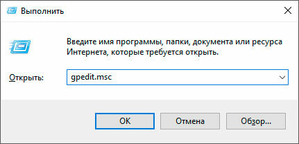3. Выполните нужные действия в открывшемся окне приложения Редактор локальной групповой политики.
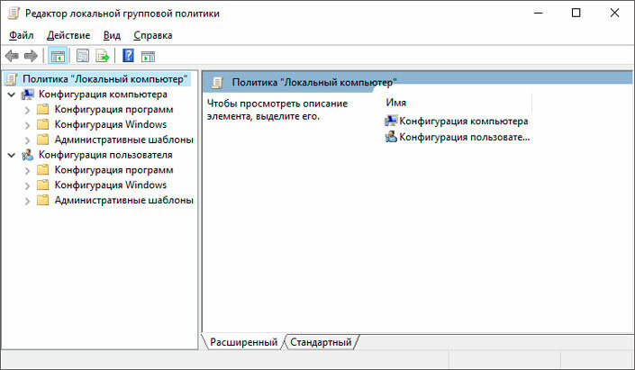
Главная же проблема заключается в Windows 10 Home, а точнее в отсутствии редактора локальной групповой политики. Для пользователей данной версии операционной системы Windows мы подготовили подробный гайд и подготовке и установке gpedit.msc.
В установке редактора локальной групповой политики в Windows 10 Home нет ничего сложного. Достаточно загрузить установочный файл и запустить его — все, редактор на вашем компьютере! Однако, это было бы слишком просто, не будь здесь подводных камней.
К сожалению, редактор локальной групповой политики работает не на всех ПК под управлением Windows 10 Home. В этом случае, скорее всего, операционная система попросит вас установить устаревшие версии Microsoft NET Framework (v2.0 или v3.0).
Скачайте Редактор локальной групповой политики (gpedit.msc).
В нашем следующем руководстве мы опишем не столько процесс установки групповой политики, сколько способы заставить ее работать на вашем ПК.
Как мы уже говорили выше, gpedit.msc не всегда торопится нормально работать в операционной системе Windows 10 Home. Тем не менее, мы можем его заставить. Для этого будут разобраны два способа: работа через системную папку SysWOW64 и работа со всеми любимой командной строкой.
SysWOW64
Подходит в случае когда система оповещает об отсутствии файла gpedit.msc.
1. Откройте папку C:\Windows\SysWOW64.
Чтобы упростить задачу, скопируйте путь и вставьте его в диалоговое окно меню Пуск или Проводника. Затем нажмите клавишу Enter.
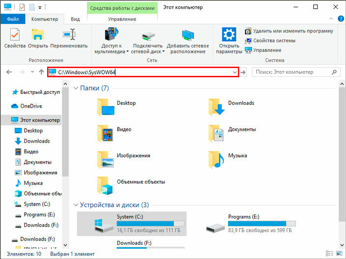
2. Скопируйте папки GroupPolicy и GroupPolicyUsers.
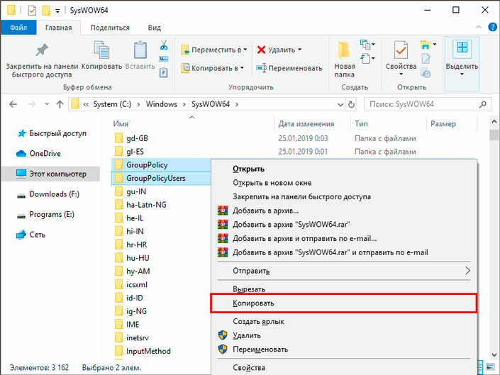
3. Теперь пройдите по пути C:\Windows\System32 и вставьте скопированные папки.
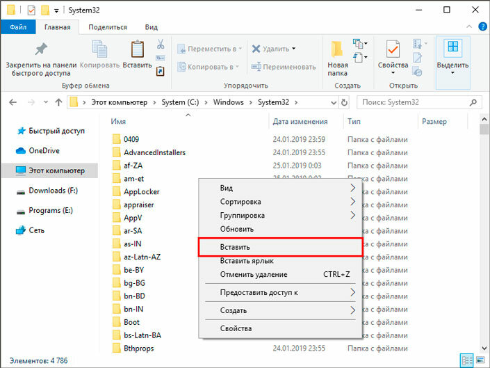
Командная строка
Подходит в случае возникновения ошибки MMC could not create the snap-in.
1. Откройте командную строку от имени администратора.
2. Введите команду cd/ и нажмите клавишу Enter.
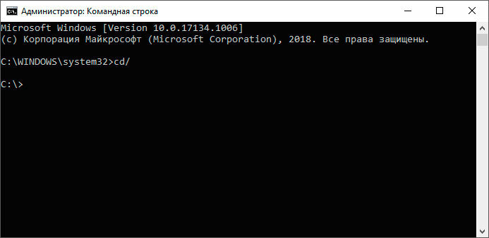
3. Теперь введите команду cd Windows.
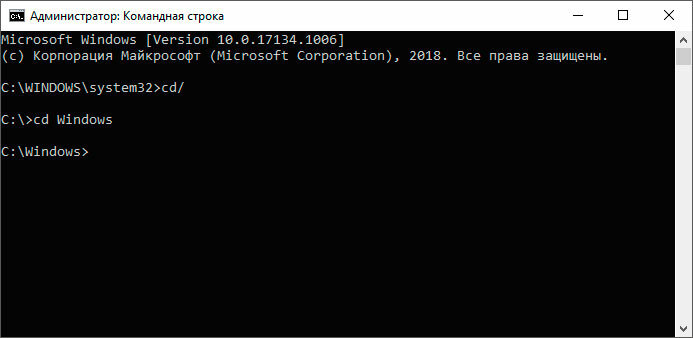
4. Введите команду cd Temp.
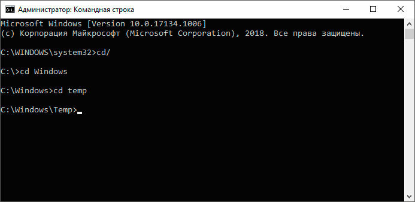
5. Если на вашем компьютере все работает, вы получите следующее уведомление: Системе не удается найти указанный путь. Если же нет, перейдите к пункту 6 не покидая командной строки.
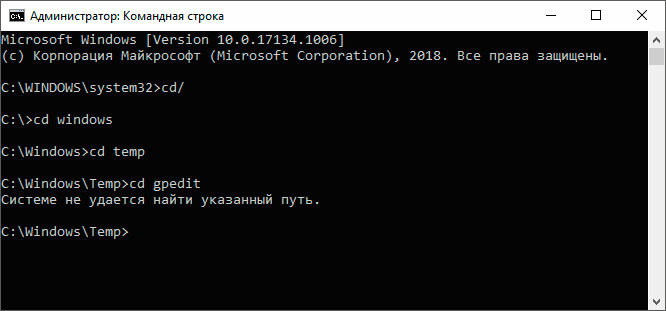
6. Введите команду x64.bat и нажмите клавишу Enter, чтобы завершить работу.
7. Перезапустите компьютер, чтобы внесенные изменения вступили в силу.
Как только вы закончили с установкой редактора групповой политики, рекомендуем обратить внимание на ее возможности. Для этого мы подготовили пару примеров, с помощью которых покажем самые базовые возможности приложения. Оно объединяет в себе буквально все параметры Windows, которые только можно найти. Главное только не забывать, что внося много рискованных изменений мы можем непреднамеренно повредить Windows. Поэтому, совершая те или иные корректировки, соблюдайте осторожность.
Защитник Windows — это встроенный системный антивирус, задача которого оберегать своего пользователя от угроз из интернета и загруженных им приложений. В некоторых случаях он может потреблять слишком много ресурсов или начинает работать тогда когда в этом нет необходимости. Поэтому самым частым решением данной ситуации является отключение Защитника Windows.
Как отключить встроенный антивирус с помощью редактора групповой политики:
1. Откройте утилиту Выполнить с помощью комбинации клавиш Windows + R.
2. Введите команду gpedit.msc и нажмите клавишу Enter.
3. Проследуйте по следующему пути внутри приложения “Редактор локальной групповой политики”:
Конфигурация компьютера > Административные шаблоны > Компоненты Windows > Антивирусная программа “Защитник Windows”.
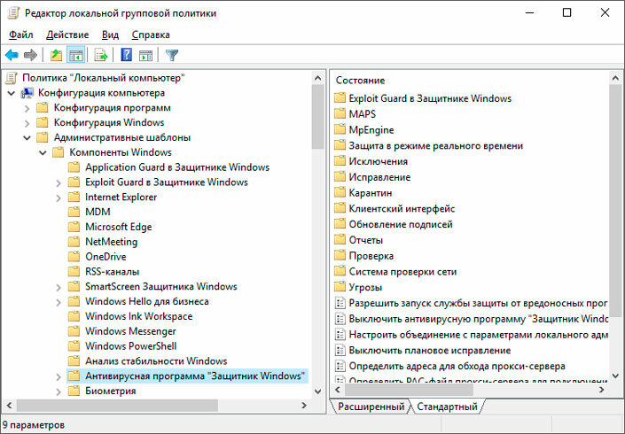
4. Найдите параметр Выключить антивирусную программу “Защитник Windows”.
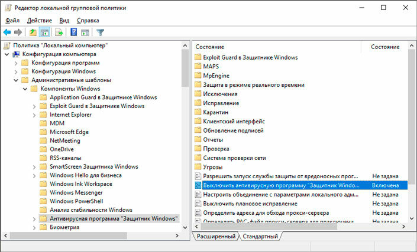
5. Щелкните по параметру правой кнопкой мыши и нажмите Изменить.
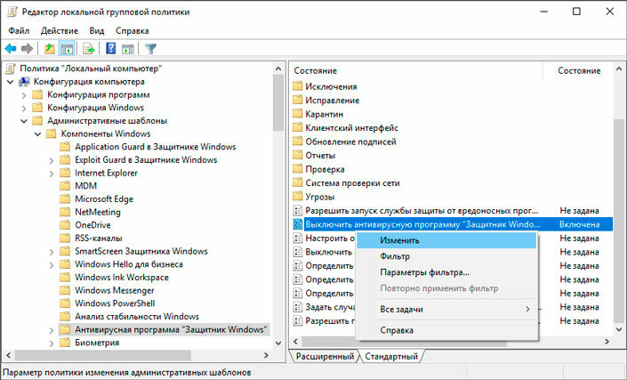
6. Измените состояние параметра на Отключено.
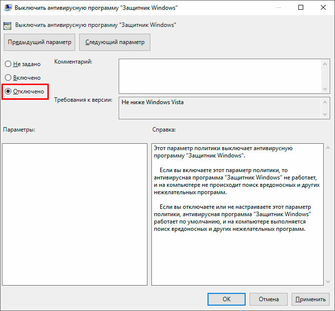
7. Примените и сохраните внесенные изменения.
Часто обновление операционной системы начинается совершенно не вовремя, когда мы к этому не готовы и, например, работаем. Это нарушает распорядок дня и, хуже всего, если такое обновление заканчивается багом вследствие которого компьютер перестает запускаться. Единственным действенным решением в такой ситуации является откат апдейта.
Можно ли предотвратить неожиданные обновления Windows и получить контроль над этим процессом? Легко! С помощью редактора локальной групповой политики вы можете в два клика отключить автоматические обновления операционной системы. При желании, вы можете запустить процесс апдейта вручную.
1. Откройте утилиту Выполнить с помощью комбинации клавиш Windows + R.
2. Введите команду gpedit.msc и нажмите клавишу Enter.
3. Проследуйте по следующему пути внутри приложения “Редактор локальной групповой политики”:
Конфигурация компьютера > Административные шаблоны > Компоненты Windows > Центр обновления Windows.
5. Щелкните по параметру правой кнопкой мыши и нажмите Изменить.
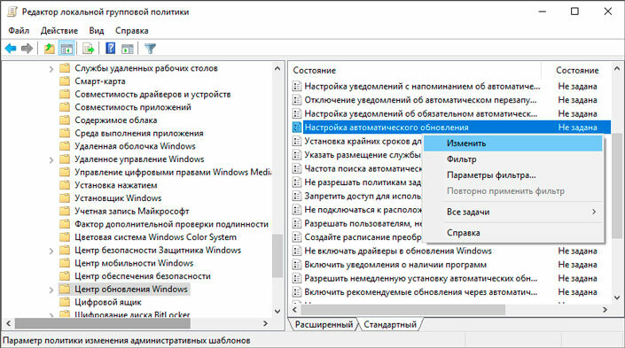
6. Измените статус параметра на Отключено.
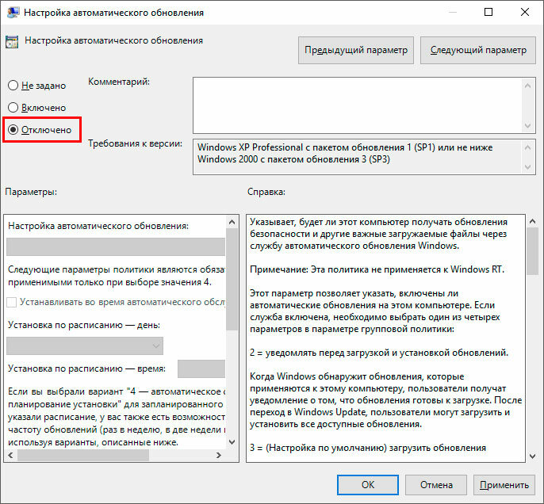
7. Примените и сохраните внесенные изменения.
Как вы, наверняка, заметили функционал редактора локальной групповой политики весьма обширен. Вы можете изменить каждый параметр операционной системы всего в одном приложении.
“С большой силой приходит большая ответственность”.
Поэтому, внося изменения в редакторе локальной групповой политики, вы вносите корректировки в реестр тоже. Помните об этом и соблюдайте осторожность.